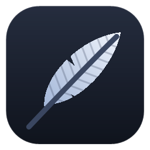
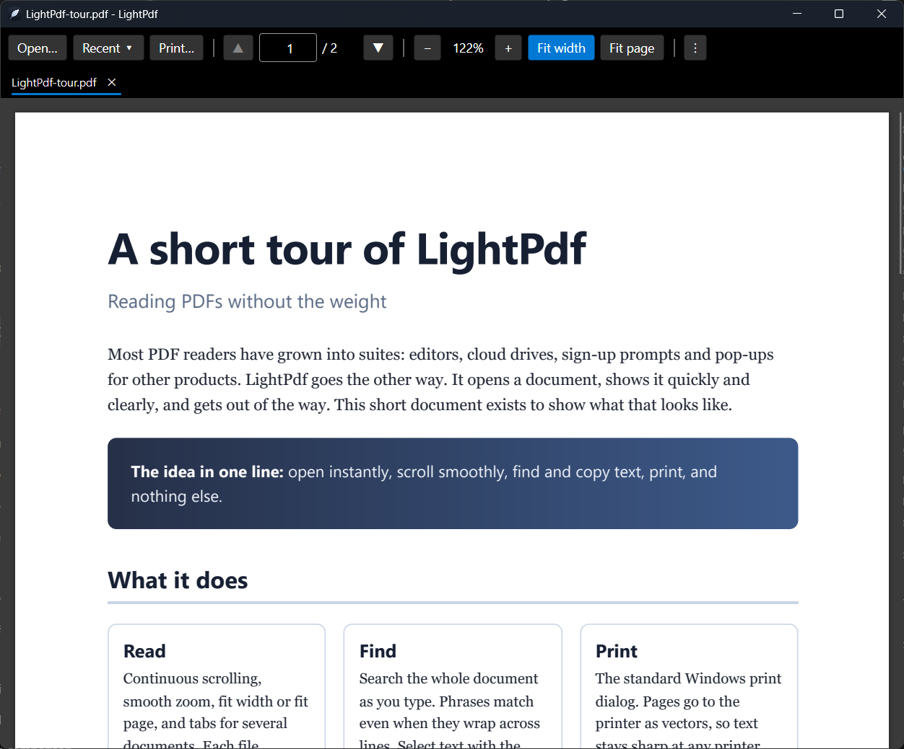
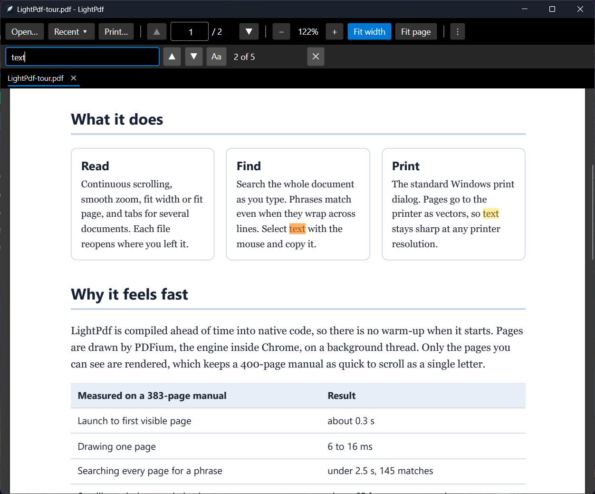
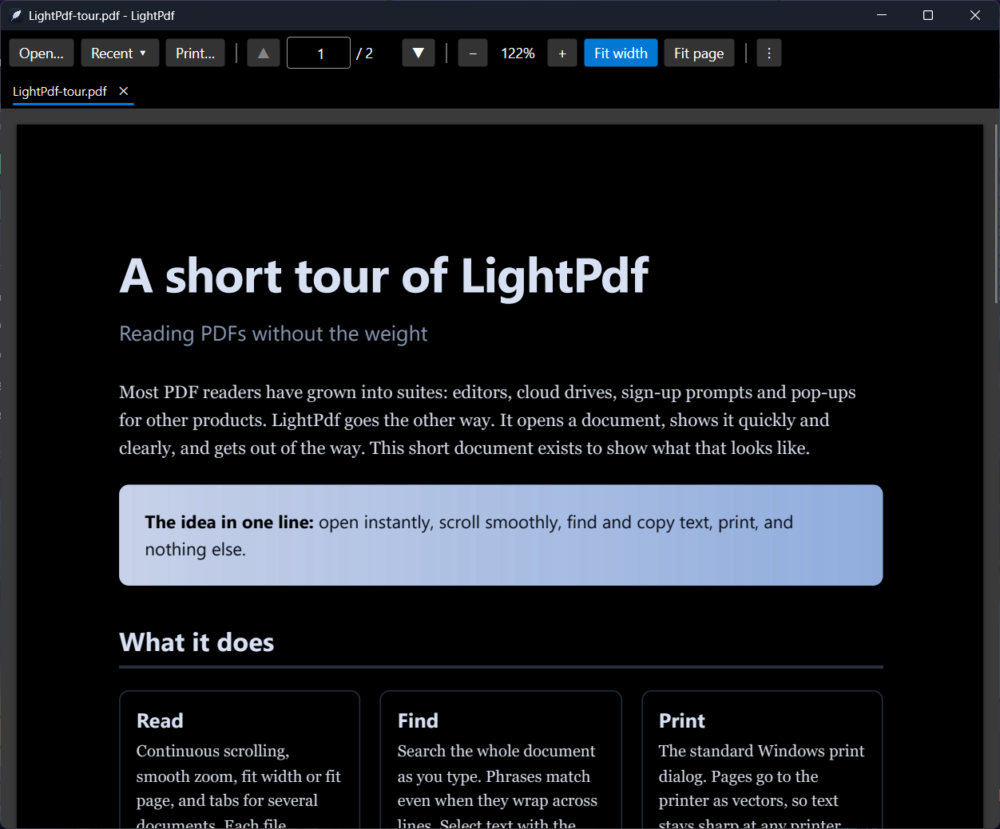
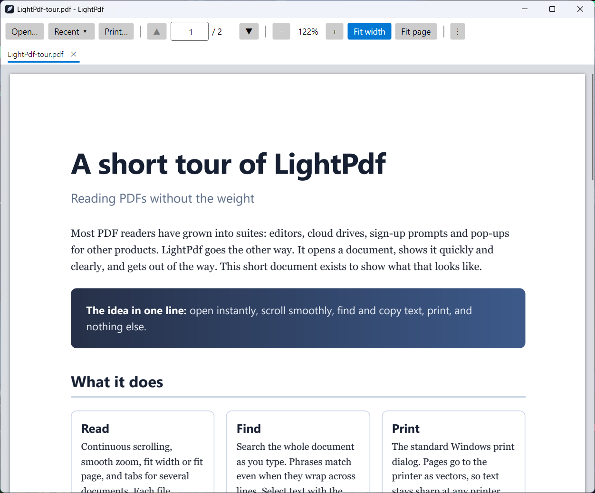

Read PDFs.
Nothing else.
A fast, minimal PDF reader for Windows. It opens in about a third of a second, and there are no accounts, no cloud and no pop-ups.
Latest release · Windows 10 or 11, 64-bit · Free and open source (MIT)

Everything a reader needs
Nothing more. LightPdf is a native app built around PDFium, the PDF engine inside Chrome, and it only draws the pages you can see. That keeps a 400-page manual as quick as a single letter.
Read comfortably
Continuous scrolling, smooth zoom around the pointer, fit width or fit page, and tabs for several documents.
Find anything
Search the whole document as you type, with every match highlighted. Phrases match even when they wrap across lines.
Select and copy
Drag across lines and pages to select text, then copy it with its line breaks intact.
Print sharply
The standard Windows print dialog. Pages go to the printer as vectors, and landscape pages rotate to fit the paper.
Easy on the eyes
Follows Windows light or dark mode. Night reading turns pages dark while keeping their colors recognizable.
Yours, privately
Nothing is uploaded or tracked. Password-protected PDFs open, and each file reopens where you left it.
See it in action
Real screenshots of LightPdf 1.0.1 on Windows 11.



Built for the keyboard
Everything is one shortcut away. The toolbar never steals focus, so Space and the arrow keys always scroll.
| Ctrl O | Open one or more files |
| Ctrl F, Enter / F3 | Find, next match |
| Ctrl G | Go to page |
| Ctrl + wheel, Ctrl + / − | Zoom |
| Ctrl 0 / 1 / 2 | Fit page / 100% / fit width |
| Ctrl Tab, Ctrl W | Next tab, close tab |
| Ctrl A, Ctrl C | Select page text, copy |
| Ctrl P | |
| Ctrl I | Night reading |
Deliberately missing
If you need these, a full PDF suite is the right tool. If you just want to read, this is.
- No accounts or sign-in. Download it and use it.
- No cloud and no telemetry. Your files stay on your computer.
- No pop-ups about other products.
- No editing: annotations, forms and signatures are out of scope.
- No auto-updater running in the background. New versions are on GitHub.
Install in a minute
Everything installs for your user only, so no admin rights are needed.
Download
Get the installer, or the portable zip to run it from any folder.
Run it
The installer adds LightPdf to the Start menu and, if you like, to "Open with" for PDF files.
Make it the default
In LightPdf's ⋮ menu choose Make LightPdf the default PDF app, then confirm in Windows Settings.
LightPdf isn't code-signed yet, so Windows SmartScreen may warn the first time you run it. Choose More info, then Run anyway. Each release lists SHA-256 checksums so you can verify your download.
Open source
LightPdf is MIT licensed and written in C# with .NET 10 and Avalonia, compiled ahead of time to native code. PDF rendering is by PDFium.
# Windows 10/11, .NET 10 SDK, Visual Studio C++ tools git clone https://github.com/lucasriechelmann/LigthPDFReader cd LigthPDFReader dotnet test # unit tests ./tools/Publish.ps1 # native build in ./publish ./tools/Package.ps1 # installer + zip in ./dist